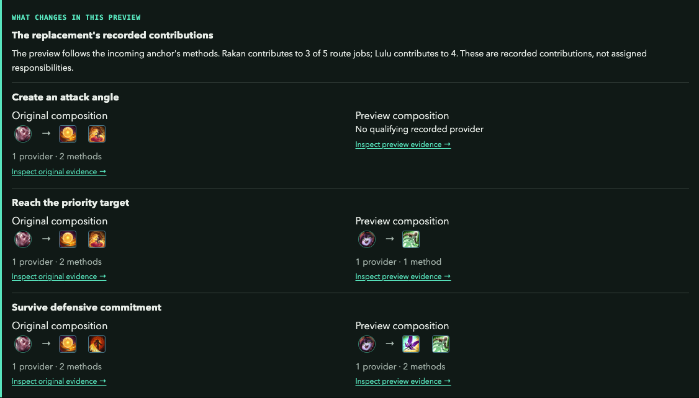
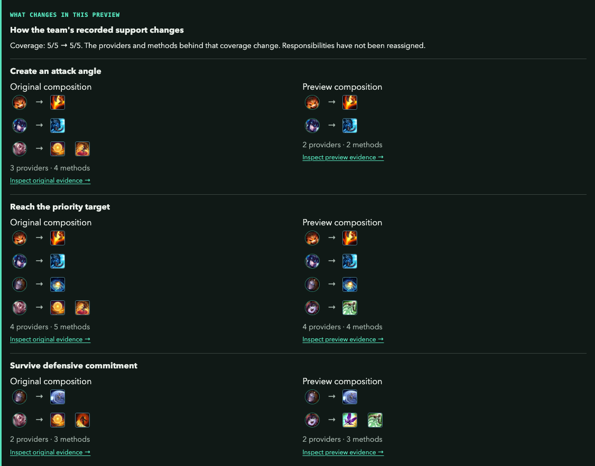
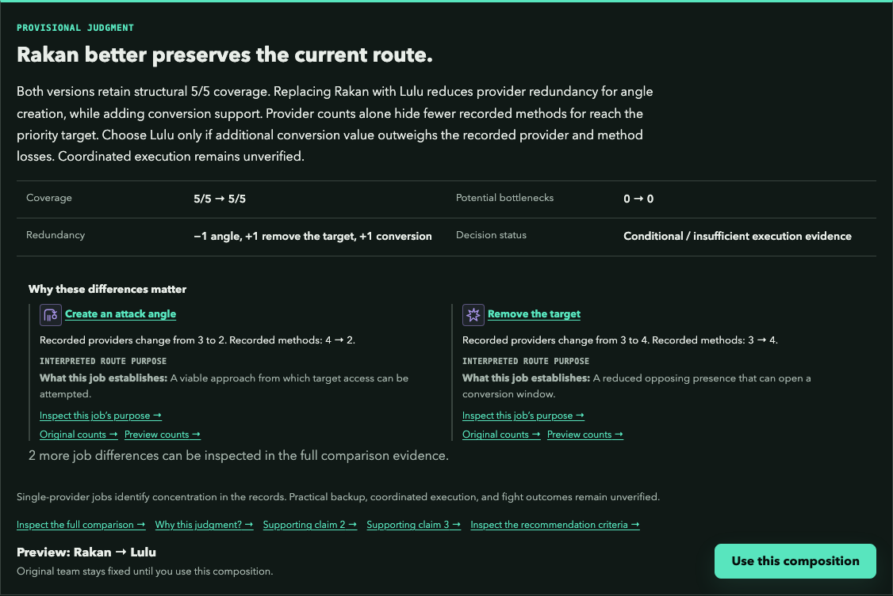

Blue has Gnar, Sejuani, and Rakan near Dragon, with Orianna and Jinx supplying much of the follow-up damage. Three champions can help start a fight. Does that give the composition three independent ways to carry out its plan?
The lineup is Gnar Top, Sejuani Jungle, Orianna Mid, Jinx ADC, and Rakan Support. The strategic question is how the work is distributed across that team: who supplies access, who carries the follow-up, and what a different pick would preserve or change.
The maps illustrate why those relationships matter. Anchor Lab’s Team composition experiment checks the recorded champion contributions. Its assessment does not determine which engage will land in this particular Dragon fight.
Several opening tools. Which responsibilities do they share?
An authored Dragon setup makes the composition question concrete. These positions are separate from the structural assessment shown below.
This illustrated setup places Blue’s damage dealers near controlled space. Sejuani has a frontal option; Rakan sees a deeper angle. Use the scene to ask which responsibilities and conditions each opening would require.
- A target near the front
Sejuani’s candidate start reaches the exposed enemy near Blue’s controlled approach.
- A tempting deeper target
Rakan may reach the back position. The next question is whether the team can join that contact.
- The same two damage dealers
Keep Orianna and Jinx in view. Compare the ground they would need to cross for each opening.
- ○ Blue
- × Red
- ⇢ Intended movement
- ··· Effect relationship
- ◌ Intended control
Authored situation on the labs’ shared Season 2024 schematic. Positions and control areas illustrate the argument; exact ranges, timing, vision, and outcomes require game-state evidence. Hover or follow a numbered marker for context. Terrain reference ↗
Start With the Team's Objective
Choose Conversion as the objective and Breach and Remove as the pathway to inspect. In plain language, the team wants to turn an opening into durable value. This route organizes the work into five responsibilities: create an attack angle, reach the priority target, survive defensive commitment, remove the target, and convert the removal.
This is a selected hypothesis about the composition. It gives the analysis a purpose while leaving the team's actual intention open. The Dragon setting makes conversion recognizable; the evaluator does not establish that any particular spell can damage Dragon or secure it. A champion becomes useful to this plan through the responsibilities it supports and the work it leaves for teammates.
The recorded pathway organizes the composition assessment. Method conditions and coordinated execution still need checking.
- Create an attack angle
- Reach the priority target
- Survive defensive commitment
- Remove the target
- Convert the removal
What Does Each Champion Contribute?
In the current model, Gnar, Sejuani, and Rakan all have conditional contributions to angle creation. Their profiles differ elsewhere: Gnar also supports target removal, Sejuani has recorded target-access contributions, and Rakan contributes to surviving commitment.
With Rakan selected as the anchor, the original composition records his contributions to three of the five route jobs: create an attack angle, reach the priority target, and survive defensive commitment. Open each job to see the abilities and conditions behind that statement.
That reading is more useful than counting three initiators. It identifies which responsibilities overlap and which depend on a different part of the roster. A recorded method still needs an appropriate recipient, availability, and the conditions attached to its evidence. The screenshots use one saved comparison throughout. Rakan is in the original composition; Lulu is the preview alternative. Start with the original column, then inspect the change.
Read the jobs behind the champion label
{kind=link}

Open full-size image ↗Read the original-composition column for Rakan. The preview column keeps Lulu visible for the replacement test later in this article. Each provider and ability links to its own evidence.
Captured from Anchor Lab’s Team composition experiment. The selected objective and pathway frame a structural comparison backed by imported ability evidence. The article’s map positions are separate illustrations. Execution remains a separate check.
Open this setup in Anchor LabWhere Does the Rest of the Work Sit?
The original composition has at least one recorded provider for all five route jobs. Coverage is 5/5, and none of those jobs has only one recorded champion provider. Those are structural findings; they leave execution and the independence of the methods unresolved.
Angle creation has three providers: Gnar, Sejuani, and Rakan. Surviving defensive commitment is supported by Orianna and Rakan. Conversion support is recorded for Orianna and Jinx. The model therefore places different parts of the plan on different combinations of teammates.
This distribution changes what to inspect. Another angle-creation method may reinforce an already represented responsibility. Losing a contribution elsewhere could concentrate work on fewer teammates even while every job remains covered. In a different roster, a sole-provider finding would be a useful warning to investigate.
Counted providers are potential sources of support. They do not establish three independent starts, interchangeable backup, or a safe damage position.
Inspect the work distributed across the team
{kind=link}

Open full-size image ↗Both versions retain recorded support for all five route jobs. Inspect which champions and methods carry that support. Equal coverage can conceal a change in where the work is concentrated.
Captured from Anchor Lab’s Team composition experiment. The selected objective and pathway frame a structural comparison backed by imported ability evidence. The article’s map positions are separate illustrations. Execution remains a separate check.
Open this setup in Anchor LabWhat Changes With Another Pick?
Test Lulu in Rakan's support slot while keeping Gnar, Sejuani, Orianna, Jinx, Conversion, and Breach and Remove fixed. Lulu is a deliberately chosen comparison that exposes a tradeoff. She is outside the three leading suggestions in this saved example.
Both compositions retain 5/5 recorded route coverage. Angle-creation providers decrease from three to two, leaving Gnar and Sejuani. Conversion providers increase from two to three, with Lulu joining Orianna and Jinx. Surviving defensive commitment retains two providers, with Lulu replacing Rakan's contribution.
At the method level, angle creation changes from four recorded ability methods to two, while conversion changes from two to four. These are distinct ability identifiers matched to each job, with their source conditions retained. Additional conversion records do not prove additional independent ways to secure Dragon.
The practical question is whether the team values that shift toward conversion support enough to accept fewer recorded angle-creation methods. The brief applies its stated structural criteria; inspect those criteria before treating its provisional preference as your team's decision.
This is a composition design question: what does the replacement preserve, where does support become more concentrated, and what new work can the team potentially perform? The evaluator leaves actual availability, positioning, coordination, and the successful fight to further evidence.
Compare the structural tradeoff
{kind=link}

Open full-size image ↗Lulu is a deliberately selected alternative for this example. The brief applies the lab’s stated ranking criteria. Open the comparison to audit gains, losses, and the original ability records.
Captured from Anchor Lab’s Team composition experiment. The selected objective and pathway frame a structural comparison backed by imported ability evidence. The article’s map positions are separate illustrations. Execution remains a separate check.
Open this setup in Anchor LabRevisit the Plan When Conditions Change
If Red controls the approaches, the team should reconsider whether its intended access and follow-up remain credible. A composition that can also protect a damage position or respond to an opposing commitment may offer another route to investigate. If the opponent supplies no usable opening, declining the contest can remain a legitimate strategic choice.
The existing lab lets you change the objective, inspect another pathway, or compare another champion. It does not infer Red's exact positioning or simulate the resulting fight. Use the illustrated situation to identify the dependency to question, then use the structural evidence to examine the composition choices around it.
Check the Whole Composition
The goal is to understand which responsibilities the team can support and whether its alternatives genuinely change that structure.
- What objective and pathway are we assessing?
- Which jobs can the selected champion support through recorded methods?
- Where does the remaining work sit across the team?
- Which alternatives might share conditions that still need checking?
- What does a replacement gain, lose, or concentrate?
- What additional evidence would make that tradeoff preferable?